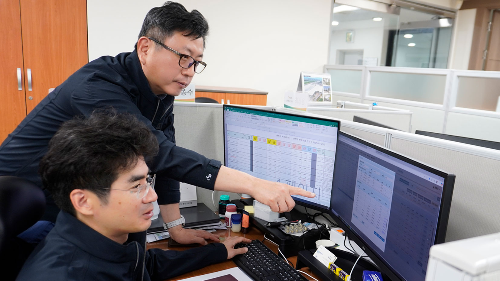
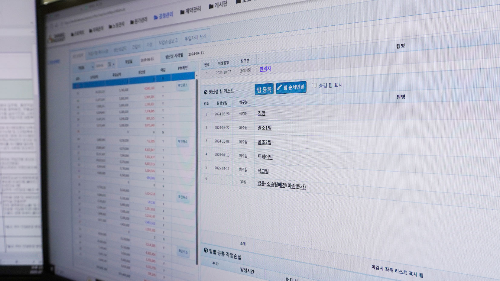
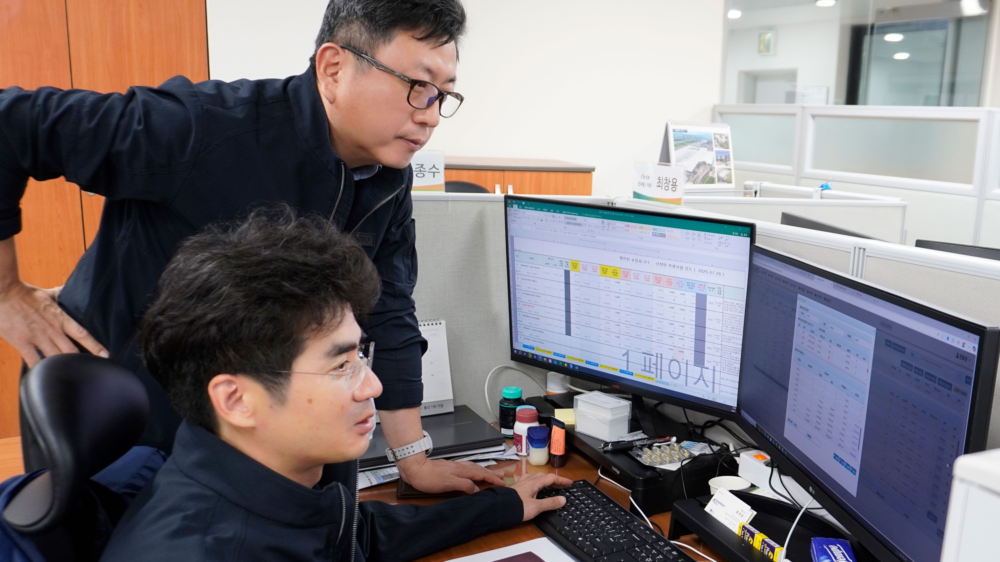
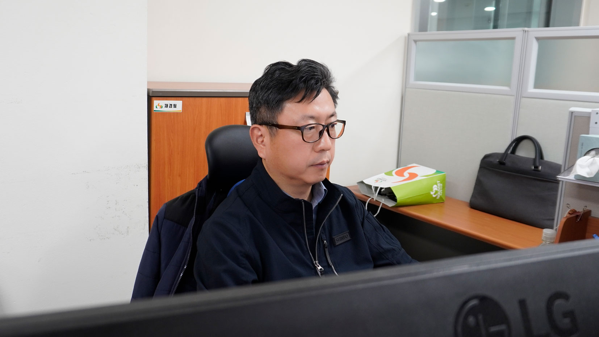
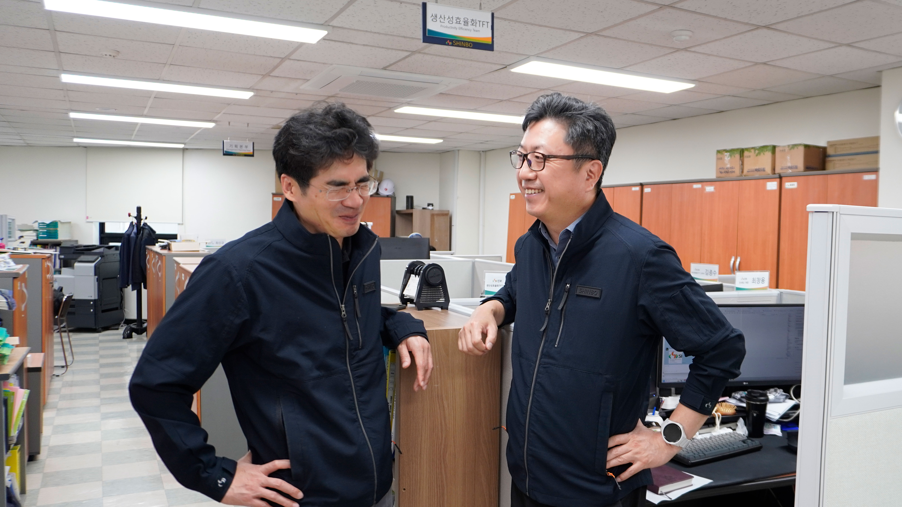

신보그룹의 성장을 이끌어 온 현장의 힘, 이제는 데이터와 만나 새로운 기준으로 진화합니다.
신속한 판단과 실행력은 우리가 수행하는 수많은 현장의 성과와 직결됩니다. 이는 업의 즉시성, 현장성과도 관련이 있는데, 돌발 상황에 기민하게 대처하는 이러한 능력은 우리의 경쟁력이 되었습니다.
하지만, 이러한 빠른 판단과 기민함이 체계적인 데이터 관리 영역까지는 아우르지 못했습니다.
우리는 이제 경험에 기반한 대응을 넘어, 데이터에 의한 의사결정 시스템으로 리스크를 선제적으로 관리하고 지속 가능한 성장의 토대를 마련해야 합니다
이러한 변화의 첫걸음으로, 데이터 기반의 새로운 관리 기준을 수립하기 위한 '생산성 효율화 TFT'가 시작되었습니다
생산성 효율화 TFT의 시작
우리 업의 본질은 시간당 인건비를 지출하고, 일량만큼의 대가를 받는 구조다.
쉽게 말해 인력 투입 자체가 곧 비용이며, 실질적인 작업 성과가 수반되지 않으면 손실로 이어지는 구조를 보입니다.
그러나 그동안 현장은 정성적 판단과 경험 중심의 운영에 의존해왔습니다.
“케이블을 100m 정도 깔았다”는 구두 보고, 발주처의 구두지시 수행, 계획과 실제 간 괴리 등…
이러한 운영 방식은 반복적인 손실의 원인을 파악하기 어렵게 만들었고, 문제가 발생해도 정산·보완할 수 있는 객관적 자료가 부족한 상황으로 이어졌습니다.더구나 전기공사는 선행공정의 영향을 크게 받는 업종입니다. 건축이나 마감 공정이 지연되면, 전기공사는 그 뒤에 착수해야 하므로 인력은 투입됐지만 작업이 진행되지 않는 상황이 빈번하게 발생합니다.
이처럼 외부 요인에 따라 생산성이 저하되는 상황에서 책임 소재나 정산 기준을 명확히 하기 위해서라도, 수치 기반의 관리 체계는 필수적이었습니다.
이러한 필요성에서 2024년 1월, 생산성 효율화 TFT가 신설됐습니다. 그 해 9월부터 신규 수주 현장을 중심으로 본격 운영을 시작했으며, 현재는 약 30개 현장에 생산성 모니터링 시스템이 적용되고 있습니다.
‘생산성’을 ‘정의’하는 시도
TFT에게 주어진 첫 번째 과제는 가장 근본적인 질문에 답하는 것이었습니다. '생산성을 높인다'는 목표를 달성하려면,
“'생산성'은 투입 대비 성과(실적)가 예측 범위 안에서 벌어지는가”를 점검하는 구조를 만들고, 그 수치를 매일 팀 단위로 기록하고 축적해나가는 방식입니다.
예컨대, 한 팀이 케이블 1,000m를 포설했다면, 그 작업에 몇 명이 며칠간 투입되었는지를 기준으로 팀의 생산성이 도출됩니다.
이는 단순한 숫자가 아니라, 성과를 수치로 말할 수 있는 관리 기준이 됩니다.
현장 의존에서 데이터 중심으로
명확한 기준이 생기자, 다음 목표는 이 기준을 현장에서 활용할 수 있게 하는 것이었습니다. 개인의 머릿속에 있던 경험을 모두가 볼 수 있는 '데이터'로 바꾸는 것, 즉 업무 패러다임의 거대한 전환이 필요했습니다.
TFT팀은 생산성 ERP 시스템을 도입해, 실시간 생산성 데이터를 추적하고 향후에는 노임 전도금까지 연결할 수 있도록 설계할 계획을 갖고 있습니다.
개발 최우선 과제: 현장 친화성
생산성 효율화 TFT팀이 시스템 개발 시 가장 집중한 건 ‘기능’보다 ‘현장 친화성’입니다. 현장에서 입력은 최대한 간단하게, 그러나 가능한 많은 정보를 유추할 수 있도록. 실제로 운영이 가능한 시스템을 만들기 위해 현장 중심의 데이터 입력 환경을 최우선 과제로 두었습니다.
현재 국내 ERP는 정착 단계에 있으며, 해외 현장 ERP는 별도로 개발 중입니다. 최종 목표는 현장의 생산성 역량과 정산역량을 강화하는 것입니다.
현장에서 확인된 ‘데이터의 힘’
하지만 아무리 좋은 시스템이라도 현장에서 외면받는다면 무용지물입니다. '현장 친화성'이라는 원칙을 지켰기에, 비로소 데이터가 쌓이기 시작했고, 그 데이터를 통해 객관적인 업무를 파악할 수 있게 되었습니다.
실시간 모니터링은 단순한 숫자 수집이 아니다. 예측 범위를 벗어난 생산성이 포착되면, 즉시 원인을 추적하고 대응하는 구조다.
예를 들어 설계변경 지연 등으로 생산성의 예측 범위가 벗어나는 현장이 발생하면, 그 현장을 집중적으로 모니터링합니다. 데이터상으로 보여지는 문제가 무엇인지 찾으면 해당 현장을 담당하는 사업부 PM과 공유합니다. PM은 데이터 및 실제 현장의 상황을 파악해 문제를 해결합니다.
정성적 판단만으로는 발견할 수 없던 리스크를
정량화된 데이터로 업무를 진행하게 되는 것이다.
수치가 바꾼 운영 문화
데이터가 쌓이자, 단순히 리스크를 발견하는 것을 넘어 조직의 일하는 방식도 변하기 시작했습니다. 객관적인 숫자는 개인의 경험이나 직급보다 더 강력한 '소통의 언어'가 되었습니다.
시스템 도입은 단순한 수치 향상이 아닌, 운영 방식과 조직 문화를 바꾼 작업이었다.
PM마다 달랐던 공정률 산출 기준, 소장·공무마다 다르게 쓰던 관리 스킬이 이제는 ERP 기반의 기준화된 관리 방식으로 수렴되고 있습니다.
객관성과 정확성, 이중 검토 체계가 가능해졌고, 이 기준은 경험이 부족한 PM에게는 일종의 ‘관리 교본’ 역할을 할 것으로 기대도 하고 있다. ERP 화면 내 일일 작업량, 누적 물량, 예상 투입 대비 실적 등은 “관리의 기준이 수치로 제시되는 체계”를 가능케 했다.
변화의 중심에서
생산성 효율화 TFT는 단순히 데이터를 관리하는 팀이 아니다.
현장 PM의 판단을 보완하고, 리스크를 사전에 감지하며, 성과 중심으로 양질의 인력과 팀을 발굴하는 데 기여하고 있습니다.
올해 상반기만 돌아봐도, 생산성 ERP 시스템은 리스크 조기 감지 기능으로서 작동했고, 현장에 일정한 긴장감을 유지시켜주는 역할을 해왔습니다.
외주팀 간 물량 대비 실적 비교, 직영팀 생산성 추적이 가능해지면서 “현장을 숫자로 비교하고 판단할 수 있는 구조”가 현실화되고 있다.
결국 TFT는 일시적인 조직을 넘어, 현장 경영의 리스크를 관리하고 성과를 이끄는 그룹의 핵심적인 '컨트롤 타워'로 진화하고 있는 것입니다.
이제 막 시작된 관리의 기준
처음부터 가능하다고 생각한 사람은 많지 않았다. 현장의 운영 방식을 숫자로 바꾼다는 것, 하루하루의 작업을 수치로 관리한다는 것이 말처럼 쉬운 일이 아니라는 건 모두가 알고 있었다.
실제로 비슷한 시도를 한 곳은 있었지만 ‘엑셀 수준’에서 그쳤고, 시스템으로 실현된 사례는 없었습니다. 그런 의미에서, 지금 이 팀이 만들어낸 구조는 단순히 시스템 하나를 구축했다는 의미를 넘어섭니다.
신보그룹은 연간 신규 수행 현장이 50~60개에 달하는 만큼, 향후 모니터링 인력의 확충도 불가피할 전망입니다. ‘정착’과 ‘운영’을 넘어 ‘리스크 매니지먼트 전담’, ‘모니터링 전담’ 등 기능별 분화도 검토되고 있습니다.
불가능하다고 여겼던 시도를 실현했고, 이제는 성과 효율성까지 높일 수 있다는 점에서, 이 팀의 다음이 더욱 기대되고 있다.